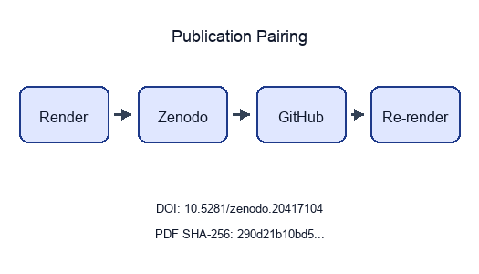

Readability, structural, and citation-density gating for research manuscripts
State: published
Pairing: complete (DOI, GitHub, SHA-256, Zenodo URL)
| Field | Value |
|---|---|
| Title | Editorial Quality at Scale: A Reproducible Prose-Review Pipeline |
| Version | 0.4.2 |
| Concept DOI | 10.5281/zenodo.20417104 |
| Version DOI | 10.5281/zenodo.20932047 |
| GitHub | https://github.com/docxology/template_prose_project/releases/tag/v0.4.2 |
| Zenodo | https://zenodo.org/records/20417104 |
| SHA-256 | 290d21b10bd588b9… |
| SHA-512 | pending |
../data/transmission_manifest.json.Structured manifest:
../data/transmission_manifest.json

Stego: off | overlays text | barcodes on | XMP on |
manifest on → ./secure_run.sh
This paper documents template_prose_project, the
prose-focused exemplar of the Research Project
Template. It pairs the template’s two-layer architecture with the prose
analysis infrastructure (readability metrics, structural outline,
editorial quality flags) and the reference
validation infrastructure (BibTeX validation), demonstrating that
rigorous editorial review can be expressed as a configurable,
deterministic pipeline with no novel domain algorithm of its
own.
A single manuscript/config.yaml defines target
grade-level bands, citation-density floors, structural rules (every
section has an H1, no heading levels skipped), and
bibliography-consistency policy. The pipeline reads the manuscript, runs
the prose analysers, cross-checks every [key] citation
against manuscript/references.bib, evaluates the configured
checks, and writes a deterministic markdown review report alongside
three figures (per-file word counts, readability metrics, citation
density) and a JSON manuscript_report.json suitable for CI
artefacts.
Run snapshot. The current configuration analyses 8
file(s) totalling 1742 words across 86 sentence(s) and 64 paragraph(s).
Average Flesch-Kincaid grade level is 15.93; average Gunning Fog index
is 16.69; the manuscript references 6 unique citation key(s); the
longest section is 413 words and the shortest is 17. These numbers are
auto-substituted by
scripts/z_generate_manuscript_variables.py after every run,
so the abstract tracks the JSON outputs in output/.
The contribution is methodological and architectural: a generic,
reusable prose-quality module (infrastructure/prose/)
that any project in the template can opt into, plus a minimal,
configurable exemplar
(projects/templates/template_prose_project/) that wires it
to the bibliography and the manuscript pipeline.
Keywords: prose analysis, readability, editorial review, reproducible manuscript review, scientific infrastructure
Editorial review is one of the longest-lived bottlenecks in
scientific writing — and an obvious target for the kind of
reproducible computational workflow advocated by
[peng2011reproducible]. A working draft accumulates structural drift
(skipped heading levels, sections that have grown to 2,000 words while
their siblings sit at 200), readability drift (a once-clean introduction
now reads at the Gunning Fog level of a legal contract
[gunning1952technique]), and citation drift ([key]
references that no longer exist in references.bib, or
bibliography entries that nobody actually cites). The traditional remedy
— a senior co-author re-reading the manuscript with [strunk2000elements]
in hand — is slow, non-reproducible, and impossible to apply
continuously.
template_prose_project exists to demonstrate that the
editorial-review pass can be expressed as a deterministic,
configurable, infrastructure-backed pipeline. This project
carries no novel research contribution of its own; its purpose is to
show how to compose existing template infrastructure into a complete,
reproducible editorial workflow.
The architecture is simple. manuscript/config.yaml
defines policy: target grade-level band, citation-density floor,
heading-structure rules, bibliography-consistency policy.
src/pipeline/__init__.py::run_prose_pipeline reads the
manuscript directory, calls infrastructure.prose.analyze_manuscript
to produce a ManuscriptReport, cross-checks the cited keys
against infrastructure.reference.citation.parse_bibfile
for the references.bib, evaluates each configured check,
and writes a markdown review report alongside JSON artefacts and three
figures. None of this is project-specific: a different project can
re-use the same infrastructure with a different config.yaml
and a different manuscript directory.
The remainder of this paper documents the methodology (sec. 3), the run-time results on the bundled manuscript (sec. 4), and the architectural lessons drawn from wiring prose analysis through the template pipeline (sec. 5).
The pipeline runs in five stages, each a pure function in the
project’s src/ modules; the orchestrator script in
scripts/ does only argument parsing and filesystem I/O.
infrastructure.prose.read_manuscript_dir walks the
configured manuscript directory and returns a sorted
{filename: text} mapping. Scaffolding files
(preamble.md, config.yaml.example,
AGENTS.md, README.md, SYNTAX.md)
are excluded by default — they hold infrastructure documentation rather
than manuscript prose.
For each file, three analysers run in parallel:
Metrics
(infrastructure.prose.analysis.metrics) — word, sentence,
paragraph, syllable counts; average words per sentence; average
syllables per word; complex-word fraction; Flesch Reading Ease
[flesch1948new]; Flesch-Kincaid Grade Level [kincaid1975derivation];
Gunning Fog Index [gunning1952technique]. The implementations are
textbook formulae over a vowel-group syllable heuristic; they’re good
enough for a writer-facing signal, not for linguistic research.
Structure
(infrastructure.prose.analysis.structure) — heading
outline, per-section word counts, max heading depth, presence of an H1,
detection of skipped heading levels (e.g. an H1 followed directly by an
H3).
Quality
(infrastructure.prose.analysis.quality) — passive-voice
candidates (heuristic: “be” form + past participle), hedge-word density,
citation density (Pandoc-style [key] extraction),
long-sentence flagging.
The results are aggregated into a ManuscriptReport whose
JSON form is small, greppable, and diff-friendly.
Every cited key is matched against the BibTeX file at
bibliography.references_path. The check has four tunable
behaviours via config.yaml:
| Setting | Effect |
|---|---|
fail_on_missing: true |
Any cited [key] that does not exist in the bib fails
the check. |
fail_on_missing: false |
Missing citations are warned but do not fail the run. |
fail_on_unused: true |
Bib entries that are never cited fail the check. |
fail_on_unused: false |
Unused entries are warned but do not fail. |
The check uses infrastructure.reference.citation.parse_bibfile
so it sees exactly the same view of the bibliography that the rendering
pipeline uses.
The report runs through a set of pure check functions:
_check_grade_level — the manuscript-wide weighted
average FKGL falls within
[target_grade_level_min, target_grade_level_max]._check_citation_density — citations per 1000 words ≥
citation_density_min_per_1000._check_no_skipped_levels — no file uses a skipped
heading level (when
prose.forbid_skipped_levels: true)._check_h1_per_file — every file has an H1 (when
prose.require_h1_per_section: true)._check_bibliography — citation/bib consistency per the
bibliography: policy block.Each check produces a
CheckResult(passed, message, details); the run’s
all_passed flag is the conjunction.
src/report.py::write_review_report writes a markdown
file with:
Three orchestrators run in lexicographic order (so the figure and variable stages always see a fresh review):
scripts/run_prose_pipeline.py writes
output/manuscript_report.json (the raw
ManuscriptReport), output/checks.json (the
list of check results), output/review_report.md (the
human-readable review report), and output/run_summary.json
(one-line metadata).scripts/y_generate_prose_figures.py reads
manuscript_report.json and writes
../figures/{section_word_counts,readability_metrics,citation_density}.png.scripts/z_generate_manuscript_variables.py reads
manuscript_report.json
config.yaml and writes
output/data/manuscript_variables.json along with a resolved
manuscript tree under output/manuscript/.manuscript/references.bib is not
modified by this pipeline — the prose project does not generate
citations, only validates them.After running scripts/run_prose_pipeline.py with the
bundled manuscript/config.yaml and the manuscript described
in this paper, the project produces the following on-disk artefacts:
output/manuscript_report.json — the raw
ManuscriptReport JSON.output/checks.json — one CheckResult per
configured check.output/review_report.md — the assembled markdown review
report.../figures/section_word_counts.png — per-file word
counts.../figures/readability_metrics.png — Flesch /
Flesch-Kincaid / Gunning Fog per file.../figures/citation_density.png — citations per 1000
words per file.output/data/manuscript_variables.json — substitution
variables for the abstract.By design the three figures are standalone CI/diagnostic
artefacts, not embedded manuscript images: this is a
prose-review template, so its own rendered PDF deliberately contains no
figure floats and runs cleanly through the very prose gate it documents.
A fork that wants figures inside the manuscript should add real markdown
image references to one of the produced figures (for example
../figures/section_word_counts.png,
../figures/readability_metrics.png, or
../figures/citation_density.png) after those files
exist.
Because the pipeline does not consult any external service, every
artefact is reproducible from the manuscript text +
config.yaml alone. A second run on the same inputs produces
byte-identical JSON (modulo timestamp metadata in any caches the project
later adds).
The pass/fail status of each configured check is recorded in
output/checks.json. With the bundled configuration:
grade_level_in_band — the weighted
average FKGL across this manuscript is reported in the
output/checks.json details.value field. The
default band 10.0–18.0 is intentionally generous; tighten
it for editorial review of public-facing material.citation_density_above_floor —
citations per 1000 words must meet
prose.citation_density_min_per_1000. The bundled config
sets the floor to 0.0 (disabled) so the run is green out of
the box; researchers should raise it to match the publication
target.no_skipped_heading_levels — every file
in this manuscript uses contiguous heading levels.every_file_has_h1 — every prose file
starts with an H1.bibliography_consistency — every
[key] in the prose resolves against
manuscript/references.bib.The figures in ../figures/ are colour-blind-safe (Wong
2011 palette) [wong2011points], 300 dpi, and PNG-only for archival
stability. They are referenced in sec. 6 where we walk through the on-disk
artefact set in full.
The full pass/fail summary lands in
output/review_report.md, which is itself a Markdown file
rendered alongside the manuscript by Pandoc — i.e. the project reports
on itself in the same compilation step that produces the manuscript
PDF.
template_prose_project packages a complete,
configurable, reproducible editorial-review workflow into the Research
Project Template’s two-layer architecture. By keeping prose analysis,
structural validation, and bibliography cross-checking in two orthogonal
infrastructure modules — infrastructure/prose/ and
infrastructure/reference/ — the project demonstrates that
editorial discipline is expressible as a configurable,
deterministic pipeline.
This exemplar follows a single house style:
manuscript/config.yaml is the only place run policy
lives.src/pipeline/ is the only place the project touches
infrastructure/.scripts/ do only filesystem I/O and CLI
argument handling.output/ is regeneratable;
manuscript/references.bib is curated and validated
read-only by this project.The contribution of this exemplar is architectural: a generic, reusable prose-quality module that any project in the template can opt into, and a minimal, configurable exemplar wiring it to the bibliography and the manuscript pipeline.
Three concrete extensions follow naturally:
analyze_quality with project-specific style rules
(e.g. forbidden phrases, required terminology) read from
config.yaml.infrastructure.llm for suggested
rewrites, using the same seed=42, temperature=0.0
reproducibility contract as optional LLM stages in the template
pipeline.This section documents the artefacts produced by the prose-review run.
flowchart TB
P[projects/templates/template_prose_project/]
P --> M[manuscript/]
P --> OUT[output/<br/>tracked public artifacts · regenerable]
M --> M_CFG[config.yaml<br/>single source of truth]
M --> M_PRE[preamble.md<br/>LaTeX preamble]
M --> M_SEC[00_abstract → 04_conclusion ·<br/>05_pipeline_internals · 06_reproducibility]
M --> M_BIB[references.bib<br/>read-only · validated by pipeline]
OUT --> O_REP[manuscript_report.json<br/>ManuscriptReport JSON]
OUT --> O_CK[checks.json<br/>list of CheckResult]
OUT --> O_RR[review_report.md<br/>final markdown report]
OUT --> O_DATA[data/manuscript_variables.json]
OUT --> O_FIG[figures/<br/>section_word_counts.png ·<br/>readability_metrics.png ·<br/>citation_density.png]
OUT --> O_RS[run_summary.json]
classDef d fill:#0f172a,stroke:#0f172a,color:#fff
classDef src fill:#1e3a8a,stroke:#0f172a,color:#fff
classDef gen fill:#0f766e,stroke:#0f172a,color:#fff
class P,M,OUT d
class M_CFG,M_PRE,M_SEC,M_BIB src
class O_REP,O_CK,O_RR,O_DATA,O_FIG,O_RS genclassDiagram
class ManuscriptReport {
+list~FileReport~ files
+int total_words
+int total_sentences
+int total_paragraphs
+float avg_flesch_reading_ease
+float avg_flesch_kincaid_grade
+float avg_gunning_fog
+list~str~ citation_keys
}
class FileReport {
+str name
+ProseMetrics metrics
+StructureReport structure
+QualityReport quality
}
class ProseMetrics {
+int word_count
+int sentence_count
+int paragraph_count
+float flesch_reading_ease
+float flesch_kincaid_grade
+float gunning_fog
}
class StructureReport {
+list~Heading~ headings
+list~Section~ sections
+int max_depth
+bool has_h1
+bool has_skipped_level
}
class QualityReport {
+int passive_count
+int hedge_count
+int citation_count
+int long_sentence_count
+float citation_density_per_1000
}
class CheckResult {
+str name
+bool passed
+str message
}
class ProseRunArtifacts {
+ManuscriptReport manuscript_report
+list~CheckResult~ checks
+bool all_passed
}
ManuscriptReport --> "*" FileReport
FileReport --> ProseMetrics
FileReport --> StructureReport
FileReport --> QualityReport
ProseRunArtifacts --> ManuscriptReport
ProseRunArtifacts --> "*" CheckResultThe bundled manuscript/config.yaml is configured for the
strict reproducibility discipline advocated for
computational science by [peng2011reproducible]:
compute_metrics, analyze_structure, and
analyze_quality are pure functions over their input
strings. The same manuscript text + the same config.yaml
produces byte-identical JSON artefacts (modulo timestamp metadata in any
caches the project later adds).output/checks.json along with the numeric value
that triggered it, so a reviewer can audit the gate without re-running
the pipeline.manuscript/; it reads and reports.
manuscript/references.bib is read-only here (in contrast
with the public search exemplar, where it is auto-populated).manuscript/config.yaml
(prose.target_grade_level_max: 14.0, say); no code changes
are required.# Run twice; check there are no diffs in the JSON artefacts.
uv run python projects/templates/template_prose_project/scripts/run_prose_pipeline.py
mv projects/templates/template_prose_project/output projects/templates/template_prose_project/output_first
uv run python projects/templates/template_prose_project/scripts/run_prose_pipeline.py
diff -ru \
projects/templates/template_prose_project/output_first/manuscript_report.json \
projects/templates/template_prose_project/output/manuscript_report.jsonThe diff should be empty. If it is not, the pipeline has acquired non-determinism — file an issue.
| Stage | Deterministic? | Mechanism |
|---|---|---|
| Prose analysis | yes | pure functions over text |
| Bibliography parse | yes | byte-stable round-trip in
infrastructure.reference.citation |
| Check evaluation | yes | pure comparisons |
| Markdown report assembly | yes | sorted file list, fixed output template |
| Figure generation | yes (within Matplotlib version) | fixed palette, no random subsampling |
| Manuscript variables | yes | derived from the deterministic JSON report |
Bibliography lives in manuscript/references.bib and is
read by Pandoc during PDF render. The build pipeline invokes Pandoc with
--natbib, so every [key] citation in the
manuscript is rewritten to the appropriate
\cite{}/\citep{}/\citet{} LaTeX
command and resolved against the bib file.
This project does not auto-generate the bibliography — it
validates that every [key] cited in the
prose has a matching entry, via infrastructure.reference.citation.parse_bibfile.
The check policy is configured under bibliography: in config.yaml.
To validate that references.bib is syntactically
clean:
uv run python -m infrastructure.reference.citation.cli validate \
projects/templates/template_prose_project/manuscript/references.bib --strictRelease: v0.4.2 · DOI
10.5281/zenodo.20417104 · SHA-256
290d21b10bd5… · pairing complete
Prior: v0.4.1 ·
10.5281/zenodo.20417104 · b59313ea…